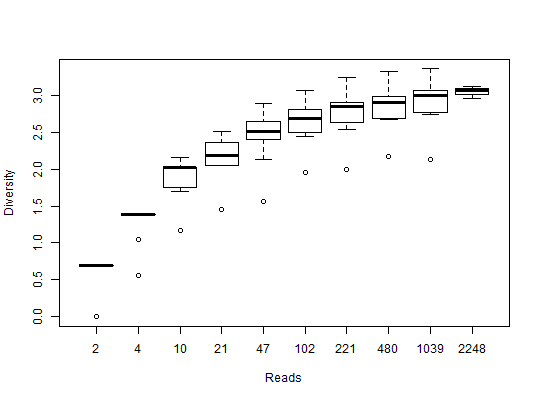

Estimate the diversity of each sample.
alpha.div(biom, rarefy = FALSE, progressbar = FALSE)
| biom | A |
|---|---|
| rarefy | Control how/whether rarefactions are done prior to alpha diversity computations. Options are:
|
| progressbar | Whether to display a progress bar and status messages (TRUE/FALSE). Will automatically tie in with shiny if run within a shiny session. |
A data frame of four diversity values for each sample in
biom. The column names are Sample, Depth and the
diversity metrics: OTUs, Shannon, Simpson, and
Chao1. The row names are the sample names, except when multiple
rarefactions are done.
library(rbiom) infile <- system.file("extdata", "hmp50.biom", package = "rbiom") biom <- read.biom(infile) ad <- alpha.div(biom)#> Setting up 8 core cluster.head(ad)#> Sample Depth OTUs Shannon Simpson Chao1 #> HMP01 HMP01 2872 89 2.972967 0.9085382 123.72222 #> HMP02 HMP02 1906 41 2.223793 0.8243218 43.08333 #> HMP03 HMP03 1217 35 1.601946 0.6244216 63.16667 #> HMP04 HMP04 2578 49 1.310901 0.4622226 70.33333 #> HMP05 HMP05 1272 54 2.189982 0.7706529 79.78571 #> HMP06 HMP06 2269 44 1.250978 0.5103010 62.06250biom <- subset(biom, Body.Site == "Saliva") ad <- alpha.div(biom, "multi") boxplot(Shannon ~ Depth, data=ad, xlab="Reads", ylab="Diversity")